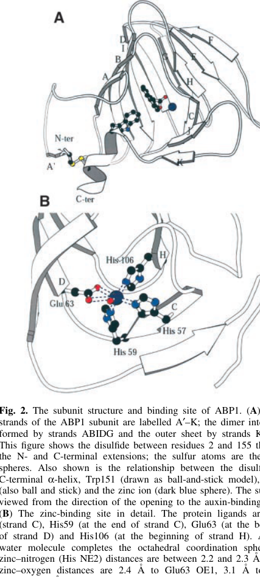

Maize ABP1 (P13689, "auxin-binding protein 1"; also ERABP1, AUX311) is a soluble ~22 kDa glycoprotein of the cupin/germin/seed-storage-7S superfamily (Pfam Auxin_BP PF02041; RmlC-like cupin β-jellyroll fold). Its single firmly established molecular function is high-affinity binding of auxin: purified maize ABP1 binds the synthetic auxin 1-naphthaleneacetic acid (1-NAA) with a KD of ~1.5-2.4 x 10^-7 M, with highest affinity at acidic (apoplastic) pH ~5.5 and approximately one ligand per monomer (Hesse et al. 1989, PMID:2555179; Woo et al. 2002, PMID:12065401). The 1.9 Angstrom crystal structure (Woo et al. 2002) shows a buried, predominantly hydrophobic binding pocket containing a Zn2+ ion coordinated by three histidines and a glutamate; the auxin carboxylate coordinates the zinc and the aromatic ring contacts hydrophobic residues including Trp151. The protein is a homodimer, N-glycosylated at Asn133, and is predominantly retained in the endoplasmic reticulum lumen via a C-terminal KDEL motif, with only a tiny fraction reaching the cell surface / apoplast (Hesse et al. 1989, PMID:2555179; Oliver et al. 2004, DOI 10.1007/BF00196668, via file:MAIZE/ABP1/ABP1-deep-research-falcon.md). ABP1's role as a *functional auxin receptor* / component of the auxin-activated signaling pathway is famously contested. The classical "candidate receptor" model rested on antibody-blocking, protoplast hyperpolarization/swelling and an Arabidopsis abp1-null embryo-lethality report, but CRISPR-generated Arabidopsis abp1 null mutants were subsequently found phenotypically normal, and an earlier "abp1 knockout" line carried a confounding second-site mutation; the canonical nuclear auxin-activated signaling pathway is now attributed to the TIR1/AFB-Aux/IAA-ARF module, while ABP1's proposed signaling role has been recast as a *cell-surface, non-transcriptional* mechanism acting with transmembrane kinases (TMKs) - a model still resting largely on Arabidopsis ABP1/ABL proteins rather than on direct maize genetics (Monzer & Friml 2025, DOI 10.1038/s44383-025-00002-8; Yu et al. 2023, DOI 10.1101/2022.11.28.518138; via file:MAIZE/ABP1/ABP1-deep-research-falcon.md). For maize ABP1 specifically, auxin binding and ER localization are well supported, whereas the in planta signaling/receptor role remains less definitively established than the binding chemistry.
| GO Term | Evidence | Action | Reason |
|---|---|---|---|
|
GO:0005788
endoplasmic reticulum lumen
|
IEA
GO_REF:0000044 |
ACCEPT |
Summary: IEA annotation from the UniProt Subcellular Location keyword mapping; duplicates the experimentally supported EXP annotation to the same term. ABP1 is predominantly ER luminal, retained by a C-terminal KDEL motif.
Reason: Correct and consistent with the EXP annotation (PMID:2555179) to the same term. The protein carries a C-terminal KDEL ER-retention signal and an N-terminal signal sequence for translocation into the ER, and the steady-state pool is overwhelmingly ER luminal [PMID:2555179]. The deep-research synthesis confirms ER lumen as the dominant location, with only a tiny apoplastic/PM fraction. A computational duplicate of a well-supported localization is acceptable.
Supporting Evidence:
PMID:2555179
An additional signal is located at the C-terminal end, consisting of the amino acids KDEL known to be responsible for preventing secretion of proteins from the lumen of the endoplasmic reticulum in eucaryotic cells.
file:MAIZE/ABP1/ABP1-deep-research-falcon.md
Most ABP1 is retained in the **ER lumen** via KDEL/HDEL-type retention
|
|
GO:0010011
auxin binding
|
IEA
GO_REF:0000120 |
ACCEPT |
Summary: IEA annotation (ARBA / InterPro IPR000526 Auxin-bd) for auxin binding; duplicates the experimentally supported IDA annotation to the same term. This is the core, firmly established molecular function of ABP1.
Reason: Correct and well supported. The InterPro Auxin-binding domain (IPR000526) and the ABP1-defining Pfam Auxin_BP (PF02041) directly underpin this term, and the function is independently confirmed experimentally: purified maize ABP1 binds 1-NAA with a KD of ~1.5-2.4 x 10^-7 M [PMID:2555179, PMID:12065401]. A computational duplicate of a directly demonstrated molecular function is appropriate.
Supporting Evidence:
PMID:2555179
The protein has an apparent mol. wt of 22 kd and binds 1-naphthylacetic acid with a KD of 2.40 x 10(-7) M.
file:MAIZE/ABP1/ABP1-deep-research-falcon.md
Purified maize ABP1 binds 1-NAA with a **KD ≈ 1.5 × 10−7 M at pH 5.5**
|
|
GO:0005788
endoplasmic reticulum lumen
|
EXP
PMID:2555179 Molecular cloning and structural analysis of a gene from Zea... |
ACCEPT |
Summary: Experimental (EXP) annotation from the original cloning/sequencing paper. ABP1 carries an N-terminal ER-translocation signal and a C-terminal KDEL ER-retention motif, and is an ER-luminal glycoprotein.
Reason: This is a core, experimentally supported cellular-component annotation. Hesse et al. (1989) purified the protein, sequenced it, and identified both a 38-residue N-terminal hydrophobic leader (ER-translocation signal) and a C-terminal KDEL motif that prevents secretion from the ER lumen, plus an N-glycosylation site consistent with passage through the secretory pathway [PMID:2555179]. ER lumen is the dominant steady-state location; ABP1 acting as a receptor would require its minor cell-surface pool, but the localization annotation itself is solid.
Supporting Evidence:
PMID:2555179
An additional signal is located at the C-terminal end, consisting of the amino acids KDEL known to be responsible for preventing secretion of proteins from the lumen of the endoplasmic reticulum in eucaryotic cells.
file:MAIZE/ABP1/ABP1-deep-research-falcon.md
predominantly **endoplasmic reticulum (ER)** localized, bearing a **C-terminal KDEL ER-retention motif**
|
|
GO:0008270
zinc ion binding
|
IDA
PMID:12065401 Crystal structure of auxin-binding protein 1 in complex with... |
ACCEPT |
Summary: IDA annotation from the 1.9 Angstrom crystal structure. ABP1 binds a single Zn2+ ion buried at the bottom of its auxin-binding pocket, coordinated by three histidines and a glutamate; the auxin carboxylate coordinates this zinc.
Reason: Directly demonstrated by X-ray crystallography of maize ABP1 in complex with 1-NAA and a zinc ion (PDB 1LR5/1LRH). The metal ion is coordinated by three histidines and a glutamate (UniProt annotates Zn-coordinating residues His95, His97, His101 and Glu144), and the auxin carboxylate binds the zinc [PMID:12065401]. This is a genuine, structurally defined molecular function central to the auxin-binding mechanism, and is correctly captured at an appropriate level of specificity.
Supporting Evidence:
PMID:12065401
The binding pocket of ABP1 is predominantly hydrophobic with a metal ion deep inside the pocket coordinated by three histidines and a glutamate. Auxin binds within this pocket, with its carboxylate binding the zinc
file:MAIZE/ABP1/ABP1-deep-research-falcon.md
ABP1 contains a **buried binding pocket** with a **Zn2+ ion** coordinated by protein residues (including histidines and a glutamate), and the **auxin carboxylate coordinates Zn2+**
|
|
GO:0010011
auxin binding
|
IDA
PMID:12065401 Crystal structure of auxin-binding protein 1 in complex with... |
ACCEPT |
Summary: IDA annotation from the crystal structure of maize ABP1 in complex with the auxin analog 1-NAA. This is the single best-established molecular function of ABP1 and represents its core activity.
Reason: The strongest annotation on this gene. The 1.9 Angstrom structure directly visualizes auxin (1-NAA) bound in the ABP1 pocket, with the auxin carboxylate coordinating the active-site zinc and the aromatic ring contacting hydrophobic residues including Trp151 [PMID:12065401]; biochemical binding (KD ~1.5-2.4 x 10^-7 M, ~1 ligand per monomer) is independently established [PMID:2555179, file:MAIZE/ABP1/ABP1-deep-research-falcon.md]. "Auxin binding" (GO:0010011) is the precise molecular function and should be retained as the core function. Note: binding auxin is distinct from BEING a functional auxin receptor / signaling-pathway component (see the GO:0009734 entry, where the receptor role is contested).
Supporting Evidence:
PMID:12065401
The structure of auxin-binding protein 1 (ABP1) from maize has been determined at 1.9 A resolution, revealing its auxin-binding site.
file:MAIZE/ABP1/ABP1-deep-research-falcon.md
The most secure functional assignment for maize ABP1 (P13689) is that it is a **high-affinity auxin-binding protein** with a well-defined **Zn-coordinated binding mechanism**
|
|
GO:0009734
auxin-activated signaling pathway
|
IEA
GO_REF:0000043 |
MARK AS OVER ANNOTATED |
Summary: SPKW (GO_REF:0000043) annotation derived from the UniProt keyword "Auxin signaling pathway" (which itself reflects the historical "Receptor for the plant hormone auxin" FUNCTION line); snapshot-only, removed in the current GOA release. ABP1 genuinely BINDS auxin, but its status as a component of the auxin-activated signaling pathway - a term defined around binding of auxin to a *receptor* that modulates a downstream cellular process - is famously contested.
Reason: GOA's removal of this annotation was, on balance, JUSTIFIED (with the caveat that it is a genuinely contested case, so "MIXED" could be argued). The GO term GO:0009734 is explicitly defined as "The series of molecular signals generated by the binding of the plant hormone auxin to a receptor, and ending with modulation of a downstream cellular process, e.g. transcription." This term is now understood to be enacted by the nuclear TIR1/AFB-Aux/IAA-ARF perception module, not by ABP1. The historical case for ABP1 as the auxin receptor (antibody-blocking of elongation, protoplast hyperpolarization/swelling, and an Arabidopsis abp1-null embryo-lethality report cited in Woo et al. 2002, PMID:12065401) has been seriously undercut: the deep-research synthesis records that Arabidopsis abp1 null mutants can lack obvious developmental/auxin-signaling phenotypes, challenging ABP1 essentiality and motivating the search for redundant co-receptors. The modern "resurrection" of ABP1 places it in a *cell-surface, non-transcriptional* auxin-perception model with TMKs and ABL proteins - mechanistically distinct from the canonical (largely transcriptional) auxin-activated signaling pathway captured by GO:0009734, and demonstrated mainly in Arabidopsis rather than in maize. For maize ABP1 specifically, the deep research is explicit that auxin binding and localization are well supported whereas "the primary in planta signaling role remains less definitive." A blanket keyword-derived "auxin-activated signaling pathway" term overstates ABP1's evidence in maize. The biology that IS defensible - that maize ABP1 responds to / binds auxin - is better captured by the broader, more cautious term "response to auxin" (GO:0009733), proposed as the replacement. The contested signaling role is discussed but not asserted as an accepted pathway-component annotation.
Proposed replacements:
response to auxin
Supporting Evidence:
file:MAIZE/ABP1/ABP1-deep-research-falcon.md
An important counterweight is the Arabidopsis literature reporting that **abp1 null mutants** can lack obvious developmental/auxin-signaling phenotypes, challenging the view of ABP1 as an essential auxin receptor in that species.
file:MAIZE/ABP1/ABP1-deep-research-falcon.md
For maize ABP1 specifically, this means: **auxin binding and localization are well supported**, whereas **the primary in planta signaling role** remains **less definitive** in the retrieved evidence than the chemistry/structure
file:MAIZE/ABP1/ABP1-deep-research-falcon.md
they do not uniquely prove that maize ABP1 is *the* in vivo receptor, because ABP1’s localization and the identity of interacting membrane partners have been difficult to resolve definitively
|
Q: Does maize ABP1 function as an auxin receptor in maize itself, or is the "receptor" designation an extrapolation from contested Arabidopsis genetics? Are there maize abp1 loss-of-function lines, and do they show auxin-response phenotypes?
Suggested experts: Richard Napier
Q: Given that maize ABP1 is overwhelmingly ER-luminal, what is the mechanism and physiological significance of the minor cell-surface/apoplastic pool, and does it interact with maize TMK-family kinases as proposed for Arabidopsis ABP1/ABL proteins?
Suggested experts: Jiří Friml
Q: Is the acidic-pH optimum of auxin binding (KD lowest at pH ~5.5) evidence that the physiologically relevant binding occurs extracellularly (apoplast) rather than in the neutral ER lumen, and how is auxin binding reconciled with predominant ER retention?
Suggested experts: Richard Napier
Experiment: Generate true maize abp1 loss-of-function alleles (CRISPR knockout and clean null lines free of second-site mutations) and assay auxin-response phenotypes (coleoptile elongation, root growth, gravitropism, rapid PM electrical responses) to test whether maize ABP1 is required for auxin signaling in its native species.
Hypothesis: As in Arabidopsis CRISPR abp1 nulls, maize abp1 nulls will be largely phenotypically normal for canonical auxin responses, supporting the view that the auxin-activated signaling pathway (GO:0009734) is not ABP1-dependent.
Type: reverse genetics / loss-of-function phenotyping
Experiment: Test for an auxin-dependent physical interaction between maize ABP1 (and the apoplastic fraction specifically) and maize transmembrane kinases (TMK orthologs) using co-immunoprecipitation, split-luciferase and BiFC, with pocket-histidine mutants as controls.
Hypothesis: Maize ABP1 engages TMK extracellular domains in an auxin-dependent manner at the cell surface, supporting a non-transcriptional cell-surface perception role distinct from the canonical nuclear auxin-activated signaling pathway.
Type: protein-protein interaction / cell-surface signaling assay
Experiment: Quantify and compare auxin-binding affinity and specificity (IAA vs 1-NAA vs synthetic-auxin herbicides) of purified maize ABP1 across a physiological pH range (apoplastic pH ~5.5 vs ER/cytosolic ~7), using isothermal titration calorimetry and fluorescence assays, with zinc-coordinating-residue mutants.
Hypothesis: Auxin binding is strongly favored at acidic apoplastic pH and abolished by mutation of the Zn-coordinating His/Glu residues, supporting an extracellular, metal-dependent binding mode.
Type: in vitro quantitative ligand-binding assay
The research report should be a detailed narrative explaining the function, biological processes, and localization of the gene product. Citations should be given for all claims.
You should prioritize authoritative reviews and primary scientific literature when conducting research. You can supplement
this with annotations you find in gene/protein databases, but these can be outdated or inaccurate.
We are specifically interested in the primary function of the gene - for enzymes, what reaction is catalyzed, and what is the substrate specificity? For transporters, what is the substrate? For structural proteins or adapters, what is the broader structural role? For signaling molecules, what is the role in the pathway.
We are interested in where in or outside the cell the gene product carries out its function.
We are also interested in the signaling or biochemical pathways in which the gene functions. We are less interested in broad pleiotropic effects, except where these elucidate the precise role.
Include evidence where possible. We are interested in both experimental evidence as well as inference from structure, evolution, or bioinformatic analysis. Precise studies should be prioritized over high-throughput, where available.
Target identity. The requested protein is auxin-binding protein 1 (ABP1) from maize (Zea mays), UniProt accession P13689. The core experimental literature used here explicitly studies maize ABP1 protein (e.g., crystallography and biochemical binding), and matches key UniProt features: a soluble glycoprotein, predominantly endoplasmic reticulum (ER) localized, bearing a C-terminal KDEL ER-retention motif, with a defined auxin-binding pocket (woo2002crystalstructureof pages 1-2, woo2002crystalstructureof pages 3-5, oliver2004regulationofsynthesis pages 7-8).
Ambiguity warning (handled). “ABP1” is heavily discussed in Arabidopsis auxin biology, including a long-running controversy about whether ABP1 is required for development/auxin responses in that species. This report uses Arabidopsis-centered sources only to contextualize recent models and explicitly separates them from maize ABP1 (P13689) biochemical/structural evidence (monzer2025historicalandmechanistic pages 1-2, monzer2025historicalandmechanistic pages 4-5).
ABP1 is a soluble auxin-binding protein historically proposed to function in rapid (non-transcriptional) auxin responses, potentially via a cell-surface/apoplastic pool that could transmit signals to the plasma membrane (PM). However, most cellular ABP1 is retained in the ER lumen via KDEL, creating a central conceptual tension: strong auxin-binding chemistry versus uncertain physiological receptor role (kl�mbt1990aviewabout pages 1-3, oliver2004regulationofsynthesis pages 7-8).
Crystal-structure analysis places maize ABP1 within the cupin/germin/7S family, with a β-jellyroll (cupin-like) barrel fold and a metal-centered ligand pocket (woo2002crystalstructureof pages 1-2, woo2002crystalstructureof pages 3-5). This aligns with UniProt’s domain annotations (cupin superfamily / Auxin_BP PF02041 equivalence) in functional terms, though UniProt family naming is not needed to establish the fold.
Crystal structure and binding pocket. The maize ABP1 structure was solved at 1.9 Å resolution in complex with the synthetic auxin analog 1-naphthaleneacetic acid (1-NAA) (Woo et al., 2002; published June 2002; https://doi.org/10.1093/emboj/cdf291). ABP1 contains a buried binding pocket with a Zn2+ ion coordinated by protein residues (including histidines and a glutamate), and the auxin carboxylate coordinates Zn2+; the aromatic moiety sits in a hydrophobic environment (woo2002crystalstructureof pages 1-2, woo2002crystalstructureof pages 3-5).
Visual evidence (binding-pocket architecture). Cropped figure panels from Woo et al. show Zn coordination and 1-NAA electron density / interaction schematic supporting this mechanism (woo2002crystalstructureof media 33c74884, woo2002crystalstructureof media 87308638, woo2002crystalstructureof media 94f34f13).
Affinity and stoichiometry. Purified maize ABP1 binds 1-NAA with KD ≈ 1.5 × 10−7 M at pH 5.5, with Scatchard analysis indicating approximately one ligand per monomer, and highest affinity near pH 5.5 (Woo et al., 2002; https://doi.org/10.1093/emboj/cdf291) (woo2002crystalstructureof pages 3-5).
Older binding estimates (contextual). A classic synthesis paper reported apparent binding constants such as Ko ≈ 4–6 × 10−8 M for NAA and an ER-associated “site I” with K ≈ 2 × 10−7 M, while also emphasizing the relevance of acidic apoplastic pH (~5–6) versus near-neutral cytosolic pH for interpreting binding and signaling hypotheses (Klämbt, 1990; published June 1990; https://doi.org/10.1007/BF00019401) (kl�mbt1990aviewabout pages 1-3).
Interpretation. The robust observation that binding is favored at low pH is frequently interpreted as consistent with a physiologically relevant extracellular/apoplastic binding mode, because the apoplast is typically more acidic than the cytosol (kl�mbt1990aviewabout pages 1-3, monzer2025historicalandmechanistic pages 1-2).
The best-supported maize quantitative affinity in the retrieved evidence is for 1-NAA at pH 5.5 (KD ~1.5×10−7 M). The structure-based analysis suggests IAA likely binds with lower affinity than 1-NAA (woo2002crystalstructureof pages 3-5). Claims about broad ligand spectra (e.g., herbicide selectivity) are plausible based on pocket variation, but quantitative maize-specific panels for multiple ligands were not present in the retrieved text excerpts (woo2002crystalstructureof pages 3-5).
Multiple sources describe maize ABP1 as predominantly ER luminal and bearing a C-terminal KDEL motif that supports ER retention (Woo et al., 2002; https://doi.org/10.1093/emboj/cdf291; Oliver et al., 2004; published Oct 2004; https://doi.org/10.1007/BF00196668) (woo2002crystalstructureof pages 3-5, oliver2004regulationofsynthesis pages 7-8).
Despite ER retention, multiple functional/cytological studies have reported a small amount of ABP1 at the outer face of the plasma membrane or in the apoplast, which is key to historical receptor models (kl�mbt1990aviewabout pages 1-3, oliver2004regulationofsynthesis pages 7-8).
Quantitative framing (important limitation). A maize-focused study on synthesis/turnover emphasizes that the PM-associated ABP1 population appears to be only a tiny fraction of total cellular ABP1, and that total ABP1 pools were not strongly regulated by auxin or other growth regulators in the tested conditions (Oliver et al., 2004; https://doi.org/10.1007/BF00196668) (oliver2004regulationofsynthesis pages 7-8).
Oliver et al. estimated ABP1 mRNA half-life >10 h and described ABP1 as long-lived at the protein level, consistent with a relatively stable ER-resident pool (oliver2004regulationofsynthesis pages 7-8).
The most secure functional assignment for maize ABP1 (P13689) is that it is a high-affinity auxin-binding protein with a well-defined Zn-coordinated binding mechanism, and that it is predominantly ER luminal with KDEL-mediated retention (woo2002crystalstructureof pages 1-2, woo2002crystalstructureof pages 3-5, oliver2004regulationofsynthesis pages 7-8).
Earlier literature connected ABP/ABP1 to rapid, non-transcriptional phenomena such as auxin-dependent coleoptile elongation and plasma-membrane electrical responses.
These results support a model in which ABP1 could influence PM processes (e.g., ion fluxes) in a rapid manner, but they do not uniquely prove that maize ABP1 is the in vivo receptor, because ABP1’s localization and the identity of interacting membrane partners have been difficult to resolve definitively (kl�mbt1990aviewabout pages 1-3, oliver2004regulationofsynthesis pages 7-8).
Recent developments (priority 2023–2024). A major recent direction is the cell-surface auxin perception model involving TMKs (transmembrane kinases) and cupin-family extracellular auxin binders.
Although these experiments are not in maize, they are mechanistically relevant to maize ABP1 because maize ABP1 provides a foundational structural and biochemical reference for auxin binding in this protein class (woo2002crystalstructureof pages 1-2, woo2002crystalstructureof pages 3-5), and modern models explicitly build on ABP1’s cupin pocket architecture and low-pH binding behavior (monzer2025historicalandmechanistic pages 1-2).
Expert synthesis and interpretation. A 2025 expert review (Monzer & Friml; published Jul 2025; https://doi.org/10.1038/s44383-025-00002-8) summarizes the “resurrection” of ABP1 in a model where ABP1 (and ABL proteins) cooperate with TMKs at the cell surface to trigger ultrafast phosphorylation responses and downstream regulation of auxin transport components such as PIN trafficking/canalization (monzer2025historicalandmechanistic pages 1-2, monzer2025historicalandmechanistic pages 4-5). While this is beyond the 2023–2024 window, it provides a current authoritative synthesis linking older maize ABP1 biochemistry to current pathway frameworks.
An important counterweight is the Arabidopsis literature reporting that abp1 null mutants can lack obvious developmental/auxin-signaling phenotypes, challenging the view of ABP1 as an essential auxin receptor in that species. This controversy motivates the search for redundant receptors/co-receptors (ABL proteins) and complicates straightforward transfer of “ABP1 as receptor” claims across species (monzer2025historicalandmechanistic pages 1-2, yu2023ablsandtmks pages 1-5).
For maize ABP1 specifically, this means: auxin binding and localization are well supported, whereas the primary in planta signaling role remains less definitive in the retrieved evidence than the chemistry/structure (oliver2004regulationofsynthesis pages 7-8, kl�mbt1990aviewabout pages 1-3).
Direct 2023–2024 maize ABP1 mechanistic studies were not prominent in the retrieved corpus. However, maize studies in diverse contexts sometimes cite ABP1 as a putative receptor or report expression changes; these are correlative and should not be over-interpreted as establishing primary function (oliver2004regulationofsynthesis pages 7-8).
Primary use: research and assay design. The most concrete “real-world” use of maize ABP1 knowledge is as a reference system for auxin-binding chemistry and structural mechanism, informing:
Crop improvement relevance (indirect). Reviews discussing auxin networks frame nodes such as biosynthesis enzymes and auxin transporters as more validated crop targets, whereas ABP1’s direct engineering utility remains uncertain because of unresolved functional essentiality and receptor redundancy (monzer2025historicalandmechanistic pages 1-2, oliver2004regulationofsynthesis pages 7-8).
No retrieved evidence demonstrated deployed agricultural products or breeding programs specifically manipulating maize ABP1 (P13689) in 2023–2024.
Most defensible primary function (maize ABP1; P13689): a Zn-dependent auxin-binding protein (cupin fold) with high-affinity binding to auxin analogs at acidic pH, predominantly ER luminal but with evidence for a minor cell-surface/apoplastic pool (woo2002crystalstructureof pages 3-5, oliver2004regulationofsynthesis pages 7-8).
Most defensible cellular location: ER lumen as the dominant steady-state location (KDEL-mediated), with limited but functionally emphasized apoplastic/outer-PM presence (oliver2004regulationofsynthesis pages 7-8, kl�mbt1990aviewabout pages 1-3).
Most plausible pathway context (with uncertainty): potential participation in rapid, non-transcriptional auxin signaling at the cell surface, likely in conjunction with TMKs and/or related extracellular auxin binders (ABL proteins), but the direct in planta indispensability of ABP1 varies by species and remains debated in model systems (monzer2025historicalandmechanistic pages 1-2, yu2023ablsandtmks pages 1-5).
| Aspect | Key findings (1-3 bullet phrases) | Evidence type | Organism(s) | Primary sources with year and URL |
|---|---|---|---|---|
| identity/domains/structure | • Verified target is maize ABP1 / auxin-binding protein 1 matching UniProt P13689 • Soluble ~22 kDa glycoprotein, predominantly ER-localized, with C-terminal KDEL retention motif • Fold is cupin/germin-like β-jellyroll barrel with a metal-binding auxin pocket; crystal structure solved at 1.9 Å (woo2002crystalstructureof pages 1-2, woo2002crystalstructureof pages 3-5, woo2002crystalstructureof pages 5-7) | structure, biochem | Zea mays | Woo et al., 2002, EMBO J. https://doi.org/10.1093/emboj/cdf291; Klämbt, 1990, Plant Mol Biol https://doi.org/10.1007/BF00019401 |
| auxin binding | • Purified maize ABP1 binds synthetic auxin 1-NAA with KD ~1.5 × 10^-7 M at pH 5.5 • One auxin molecule binds per monomer by Scatchard analysis • Auxin carboxylate coordinates a Zn ion in the binding pocket; IAA predicted to bind with lower affinity than 1-NAA (woo2002crystalstructureof pages 1-2, woo2002crystalstructureof pages 3-5, woo2002crystalstructureof media 33c74884) | structure, biochem | Zea mays | Woo et al., 2002, EMBO J. https://doi.org/10.1093/emboj/cdf291 |
| pH dependence | • Highest auxin-binding affinity reported around pH 5.5 • Reviews summarize repeated binding of purified maize/tobacco ABP1 at low apoplastic pH (~5–5.5) • This supports a model in which physiologically relevant binding occurs outside the cell rather than in neutral/alkaline cytosol (woo2002crystalstructureof pages 3-5, monzer2025historicalandmechanistic pages 1-2, kl�mbt1990aviewabout pages 1-3) | biochem, review | Zea mays, tobacco, broader plant systems | Woo et al., 2002, EMBO J. https://doi.org/10.1093/emboj/cdf291; Monzer & Friml, 2025, npj Sci. Plants https://doi.org/10.1038/s44383-025-00002-8; Klämbt, 1990, Plant Mol Biol https://doi.org/10.1007/BF00019401 |
| localization/trafficking | • Most ABP1 is retained in the ER lumen via KDEL/HDEL-type retention • A much smaller pool has been reported at the outer face of the plasma membrane / apoplast • Maize turnover study found long protein half-life and that the plasma-membrane-associated fraction is only a tiny fraction of total ABP1 (oliver2004regulationofsynthesis pages 7-8, kl�mbt1990aviewabout pages 1-3, woo2002crystalstructureof pages 5-7) | localization, trafficking, review | Zea mays; supporting discussion from other plants | Oliver et al., 2004, Planta https://doi.org/10.1007/BF00196668; Klämbt, 1990, Plant Mol Biol https://doi.org/10.1007/BF00019401; Woo et al., 2002, EMBO J. https://doi.org/10.1093/emboj/cdf291 |
| proposed signaling role | • ABP1 has long been proposed as a rapid/cell-surface auxin perception component rather than a transcriptional receptor • Recent framework places ABP1 with TMK1 in an extracellular auxin-sensing complex that drives ultrafast phosphorylation and affects PIN trafficking/auxin canalization • Functional outputs historically linked to ABP1 include proton pump activation, ion channel regulation, protoplast swelling, and cell expansion (monzer2025historicalandmechanistic pages 1-2, monzer2025historicalandmechanistic pages 4-5) | review, signaling synthesis, physiological interpretation | Maize evidence foundational; mechanistic model developed mainly in Arabidopsis and broader plant systems | Monzer & Friml, 2025, npj Sci. Plants https://doi.org/10.1038/s44383-025-00002-8; Zeng et al., 2024, PNAS https://doi.org/10.1073/pnas.2412493121 |
| maize-specific functional evidence | • Early maize/corn work localized ABP activity strongly to coleoptile outer epidermal cells and antibodies against ABP blocked auxin-dependent elongation • Patch-clamp work in maize protoplasts linked an auxin-binding protein to auxin-stimulated plasma-membrane currents • Transcriptome studies report ABP1 expression changes under maize developmental/stress contexts, but these are correlative rather than definitive functional proof (kl�mbt1990aviewabout pages 1-3, monzer2025historicalandmechanistic pages 4-5) | physiological, localization, transcriptome | Zea mays | Klämbt, 1990, Plant Mol Biol https://doi.org/10.1007/BF00019401; Monzer & Friml, 2025, npj Sci. Plants https://doi.org/10.1038/s44383-025-00002-8 |
| controversies/limitations | • Major caution: extensive Arabidopsis ABP1 literature does not directly resolve maize ABP1 function • Arabidopsis abp1 null reports lacking obvious phenotypes challenged ABP1 essentiality, creating a long-running controversy • Thus, maize ABP1 has strong biochemical/structural evidence for auxin binding, but its in planta primary signaling role remains less definitively established than its binding chemistry (monzer2025historicalandmechanistic pages 1-2, monzer2025historicalandmechanistic pages 4-5, yu2023ablsandtmks pages 5-9, yu2023ablsandtmks pages 1-5) | review, genetics controversy | Zea mays distinguished from Arabidopsis | Monzer & Friml, 2025, npj Sci. Plants https://doi.org/10.1038/s44383-025-00002-8; Yu et al., 2023, bioRxiv https://doi.org/10.1101/2022.11.28.518138 |
Table: This table summarizes the strongest gathered evidence for maize ABP1 (UniProt P13689), separating direct maize biochemical/structural findings from broader ABP1-TMK signaling models and the Arabidopsis controversy. It is useful for identifying what is firmly established versus still debated.
References
(woo2002crystalstructureof pages 1-2): E. Woo, J. Marshall, J. Bauly, Jin‐Gui Chen, M. Venis, R. Napier, and R. Pickersgill. Crystal structure of auxin‐binding protein 1 in complex with auxin. The EMBO Journal, 21:2877-2885, Jun 2002. URL: https://doi.org/10.1093/emboj/cdf291, doi:10.1093/emboj/cdf291. This article has 234 citations.
(woo2002crystalstructureof pages 3-5): E. Woo, J. Marshall, J. Bauly, Jin‐Gui Chen, M. Venis, R. Napier, and R. Pickersgill. Crystal structure of auxin‐binding protein 1 in complex with auxin. The EMBO Journal, 21:2877-2885, Jun 2002. URL: https://doi.org/10.1093/emboj/cdf291, doi:10.1093/emboj/cdf291. This article has 234 citations.
(oliver2004regulationofsynthesis pages 7-8): SusanC. Oliver, MichaelA. Venis, RobertB. Freedman, and RichardM. Napier. Regulation of synthesis and turnover of maize auxin-binding protein and observations on its passage to the plasma membrane: comparisons to maize immunoglobulin-binding protein cognate. Planta, 197:465-474, Oct 2004. URL: https://doi.org/10.1007/bf00196668, doi:10.1007/bf00196668. This article has 27 citations and is from a peer-reviewed journal.
(monzer2025historicalandmechanistic pages 1-2): Aline Monzer and Jiří Friml. Historical and mechanistic perspective on abp1-tmk1-mediated cell surface auxin signaling. Npj Science of Plants, Jul 2025. URL: https://doi.org/10.1038/s44383-025-00002-8, doi:10.1038/s44383-025-00002-8. This article has 3 citations.
(monzer2025historicalandmechanistic pages 4-5): Aline Monzer and Jiří Friml. Historical and mechanistic perspective on abp1-tmk1-mediated cell surface auxin signaling. Npj Science of Plants, Jul 2025. URL: https://doi.org/10.1038/s44383-025-00002-8, doi:10.1038/s44383-025-00002-8. This article has 3 citations.
(kl�mbt1990aviewabout pages 1-3): Dieter Kl�mbt. A view about the function of auxin-binding proteins at plasma membranes. Plant Molecular Biology, 14:1045-1050, Jun 1990. URL: https://doi.org/10.1007/bf00019401, doi:10.1007/bf00019401. This article has 107 citations and is from a peer-reviewed journal.
(woo2002crystalstructureof media 33c74884): E. Woo, J. Marshall, J. Bauly, Jin‐Gui Chen, M. Venis, R. Napier, and R. Pickersgill. Crystal structure of auxin‐binding protein 1 in complex with auxin. The EMBO Journal, 21:2877-2885, Jun 2002. URL: https://doi.org/10.1093/emboj/cdf291, doi:10.1093/emboj/cdf291. This article has 234 citations.
(woo2002crystalstructureof media 87308638): E. Woo, J. Marshall, J. Bauly, Jin‐Gui Chen, M. Venis, R. Napier, and R. Pickersgill. Crystal structure of auxin‐binding protein 1 in complex with auxin. The EMBO Journal, 21:2877-2885, Jun 2002. URL: https://doi.org/10.1093/emboj/cdf291, doi:10.1093/emboj/cdf291. This article has 234 citations.
(woo2002crystalstructureof media 94f34f13): E. Woo, J. Marshall, J. Bauly, Jin‐Gui Chen, M. Venis, R. Napier, and R. Pickersgill. Crystal structure of auxin‐binding protein 1 in complex with auxin. The EMBO Journal, 21:2877-2885, Jun 2002. URL: https://doi.org/10.1093/emboj/cdf291, doi:10.1093/emboj/cdf291. This article has 234 citations.
(yu2023ablsandtmks pages 5-9): Yongqiang Yu, Wenxin Tang, Wen-shuo Lin, Wei Li, Xiang Zhou, Ying Li, Rong Chen, Rui Zheng, Guochen Qin, Wenhan Cao, Patricio Perez, Rongfeng Huang, Jun Ma, Juncheng Lin, Liwen Jiang, Tongda Xu, and Zhenbiao Yang. Abls and tmks are co-receptors for extracellular auxin. bioRxiv, Nov 2023. URL: https://doi.org/10.1101/2022.11.28.518138, doi:10.1101/2022.11.28.518138. This article has 111 citations.
(yu2023ablsandtmks pages 1-5): Yongqiang Yu, Wenxin Tang, Wen-shuo Lin, Wei Li, Xiang Zhou, Ying Li, Rong Chen, Rui Zheng, Guochen Qin, Wenhan Cao, Patricio Perez, Rongfeng Huang, Jun Ma, Juncheng Lin, Liwen Jiang, Tongda Xu, and Zhenbiao Yang. Abls and tmks are co-receptors for extracellular auxin. bioRxiv, Nov 2023. URL: https://doi.org/10.1101/2022.11.28.518138, doi:10.1101/2022.11.28.518138. This article has 111 citations.
(woo2002crystalstructureof pages 5-7): E. Woo, J. Marshall, J. Bauly, Jin‐Gui Chen, M. Venis, R. Napier, and R. Pickersgill. Crystal structure of auxin‐binding protein 1 in complex with auxin. The EMBO Journal, 21:2877-2885, Jun 2002. URL: https://doi.org/10.1093/emboj/cdf291, doi:10.1093/emboj/cdf291. This article has 234 citations.

id: P13689
gene_symbol: ABP1
product_type: PROTEIN
status: COMPLETE
taxon:
id: NCBITaxon:4577
label: Zea mays
description: >
Maize ABP1 (P13689, "auxin-binding protein 1"; also ERABP1, AUX311) is a soluble ~22 kDa
glycoprotein of the cupin/germin/seed-storage-7S superfamily (Pfam Auxin_BP PF02041;
RmlC-like cupin β-jellyroll fold). Its single firmly established molecular function is
high-affinity binding of auxin: purified maize ABP1 binds the synthetic auxin
1-naphthaleneacetic acid (1-NAA) with a KD of ~1.5-2.4 x 10^-7 M, with highest affinity at
acidic (apoplastic) pH ~5.5 and approximately one ligand per monomer (Hesse et al. 1989,
PMID:2555179; Woo et al. 2002, PMID:12065401). The 1.9 Angstrom crystal structure (Woo et al.
2002) shows a buried, predominantly hydrophobic binding pocket containing a Zn2+ ion
coordinated by three histidines and a glutamate; the auxin carboxylate coordinates the zinc
and the aromatic ring contacts hydrophobic residues including Trp151. The protein is a
homodimer, N-glycosylated at Asn133, and is predominantly retained in the endoplasmic
reticulum lumen via a C-terminal KDEL motif, with only a tiny fraction reaching the cell
surface / apoplast (Hesse et al. 1989, PMID:2555179; Oliver et al. 2004, DOI 10.1007/BF00196668,
via file:MAIZE/ABP1/ABP1-deep-research-falcon.md).
ABP1's role as a *functional auxin receptor* / component of the auxin-activated signaling
pathway is famously contested. The classical "candidate receptor" model rested on
antibody-blocking, protoplast hyperpolarization/swelling and an Arabidopsis abp1-null
embryo-lethality report, but CRISPR-generated Arabidopsis abp1 null mutants were
subsequently found phenotypically normal, and an earlier "abp1 knockout" line carried a
confounding second-site mutation; the canonical nuclear auxin-activated signaling pathway is
now attributed to the TIR1/AFB-Aux/IAA-ARF module, while ABP1's proposed signaling role has
been recast as a *cell-surface, non-transcriptional* mechanism acting with transmembrane
kinases (TMKs) - a model still resting largely on Arabidopsis ABP1/ABL proteins rather than
on direct maize genetics (Monzer & Friml 2025, DOI 10.1038/s44383-025-00002-8; Yu et al. 2023,
DOI 10.1101/2022.11.28.518138; via file:MAIZE/ABP1/ABP1-deep-research-falcon.md). For maize
ABP1 specifically, auxin binding and ER localization are well supported, whereas the in
planta signaling/receptor role remains less definitively established than the binding
chemistry.
existing_annotations:
# --- Current GOA annotations (2026 release) ---
- term:
id: GO:0005788
label: endoplasmic reticulum lumen
evidence_type: IEA
original_reference_id: GO_REF:0000044
qualifier: located_in
review:
summary: >
IEA annotation from the UniProt Subcellular Location keyword mapping; duplicates the
experimentally supported EXP annotation to the same term. ABP1 is predominantly ER
luminal, retained by a C-terminal KDEL motif.
action: ACCEPT
reason: >
Correct and consistent with the EXP annotation (PMID:2555179) to the same term. The
protein carries a C-terminal KDEL ER-retention signal and an N-terminal signal sequence
for translocation into the ER, and the steady-state pool is overwhelmingly ER luminal
[PMID:2555179]. The deep-research synthesis confirms ER lumen as the dominant location,
with only a tiny apoplastic/PM fraction. A computational duplicate of a well-supported
localization is acceptable.
supported_by:
- reference_id: PMID:2555179
supporting_text: "An additional signal is located at the C-terminal end, consisting of
the amino acids KDEL known to be responsible for preventing secretion of proteins from
the lumen of the endoplasmic reticulum in eucaryotic cells."
- reference_id: file:MAIZE/ABP1/ABP1-deep-research-falcon.md
supporting_text: "Most ABP1 is retained in the **ER lumen** via KDEL/HDEL-type retention"
- term:
id: GO:0010011
label: auxin binding
evidence_type: IEA
original_reference_id: GO_REF:0000120
qualifier: enables
review:
summary: >
IEA annotation (ARBA / InterPro IPR000526 Auxin-bd) for auxin binding; duplicates the
experimentally supported IDA annotation to the same term. This is the core, firmly
established molecular function of ABP1.
action: ACCEPT
reason: >
Correct and well supported. The InterPro Auxin-binding domain (IPR000526) and the
ABP1-defining Pfam Auxin_BP (PF02041) directly underpin this term, and the function is
independently confirmed experimentally: purified maize ABP1 binds 1-NAA with a KD of
~1.5-2.4 x 10^-7 M [PMID:2555179, PMID:12065401]. A computational duplicate of a directly
demonstrated molecular function is appropriate.
supported_by:
- reference_id: PMID:2555179
supporting_text: "The protein has an apparent mol. wt of 22 kd and binds 1-naphthylacetic
acid with a KD of 2.40 x 10(-7) M."
- reference_id: file:MAIZE/ABP1/ABP1-deep-research-falcon.md
supporting_text: "Purified maize ABP1 binds 1-NAA with a **KD ≈ 1.5 × 10−7 M at pH 5.5**"
- term:
id: GO:0005788
label: endoplasmic reticulum lumen
evidence_type: EXP
original_reference_id: PMID:2555179
qualifier: located_in
review:
summary: >
Experimental (EXP) annotation from the original cloning/sequencing paper. ABP1 carries an
N-terminal ER-translocation signal and a C-terminal KDEL ER-retention motif, and is an
ER-luminal glycoprotein.
action: ACCEPT
reason: >
This is a core, experimentally supported cellular-component annotation. Hesse et al. (1989)
purified the protein, sequenced it, and identified both a 38-residue N-terminal hydrophobic
leader (ER-translocation signal) and a C-terminal KDEL motif that prevents secretion from
the ER lumen, plus an N-glycosylation site consistent with passage through the secretory
pathway [PMID:2555179]. ER lumen is the dominant steady-state location; ABP1 acting as a
receptor would require its minor cell-surface pool, but the localization annotation itself
is solid.
supported_by:
- reference_id: PMID:2555179
supporting_text: "An additional signal is located at the C-terminal end, consisting of
the amino acids KDEL known to be responsible for preventing secretion of proteins from
the lumen of the endoplasmic reticulum in eucaryotic cells."
- reference_id: file:MAIZE/ABP1/ABP1-deep-research-falcon.md
supporting_text: "predominantly **endoplasmic reticulum (ER)** localized, bearing a
**C-terminal KDEL ER-retention motif**"
- term:
id: GO:0008270
label: zinc ion binding
evidence_type: IDA
original_reference_id: PMID:12065401
qualifier: enables
review:
summary: >
IDA annotation from the 1.9 Angstrom crystal structure. ABP1 binds a single Zn2+ ion
buried at the bottom of its auxin-binding pocket, coordinated by three histidines and a
glutamate; the auxin carboxylate coordinates this zinc.
action: ACCEPT
reason: >
Directly demonstrated by X-ray crystallography of maize ABP1 in complex with 1-NAA and a
zinc ion (PDB 1LR5/1LRH). The metal ion is coordinated by three histidines and a glutamate
(UniProt annotates Zn-coordinating residues His95, His97, His101 and Glu144), and the auxin
carboxylate binds the zinc [PMID:12065401]. This is a genuine, structurally defined
molecular function central to the auxin-binding mechanism, and is correctly captured at an
appropriate level of specificity.
supported_by:
- reference_id: PMID:12065401
supporting_text: "The binding pocket of ABP1 is predominantly hydrophobic with a metal
ion deep inside the pocket coordinated by three histidines and a glutamate. Auxin binds
within this pocket, with its carboxylate binding the zinc"
- reference_id: file:MAIZE/ABP1/ABP1-deep-research-falcon.md
supporting_text: "ABP1 contains a **buried binding pocket** with a **Zn2+ ion**
coordinated by protein residues (including histidines and a glutamate), and the **auxin
carboxylate coordinates Zn2+**"
- term:
id: GO:0010011
label: auxin binding
evidence_type: IDA
original_reference_id: PMID:12065401
qualifier: enables
review:
summary: >
IDA annotation from the crystal structure of maize ABP1 in complex with the auxin analog
1-NAA. This is the single best-established molecular function of ABP1 and represents its
core activity.
action: ACCEPT
reason: >
The strongest annotation on this gene. The 1.9 Angstrom structure directly visualizes auxin
(1-NAA) bound in the ABP1 pocket, with the auxin carboxylate coordinating the active-site
zinc and the aromatic ring contacting hydrophobic residues including Trp151 [PMID:12065401];
biochemical binding (KD ~1.5-2.4 x 10^-7 M, ~1 ligand per monomer) is independently
established [PMID:2555179, file:MAIZE/ABP1/ABP1-deep-research-falcon.md]. "Auxin binding"
(GO:0010011) is the precise molecular function and should be retained as the core function.
Note: binding auxin is distinct from BEING a functional auxin receptor / signaling-pathway
component (see the GO:0009734 entry, where the receptor role is contested).
supported_by:
- reference_id: PMID:12065401
supporting_text: "The structure of auxin-binding protein 1 (ABP1) from maize has been
determined at 1.9 A resolution, revealing its auxin-binding site."
- reference_id: file:MAIZE/ABP1/ABP1-deep-research-falcon.md
supporting_text: "The most secure functional assignment for maize ABP1 (P13689) is that
it is a **high-affinity auxin-binding protein** with a well-defined **Zn-coordinated
binding mechanism**"
# --- SPKW keyword-mapping annotation (GO_REF:0000043) ---
# Present in the Sept 2025 goa_uniprot_gcrp snapshot (go-db plant.ddb); REMOVED from the
# current (2026) GOA release when GOA retired the keyword2GO pipeline for cellular organisms.
# Reviewed retrospectively to assess whether removal was justified. The UniProt keyword
# "Auxin signaling pathway" (still present on the entry) is what mapped to GO:0009734.
- term:
id: GO:0009734
label: auxin-activated signaling pathway
evidence_type: IEA
original_reference_id: GO_REF:0000043
retired: true
review:
summary: >
SPKW (GO_REF:0000043) annotation derived from the UniProt keyword "Auxin signaling
pathway" (which itself reflects the historical "Receptor for the plant hormone auxin"
FUNCTION line); snapshot-only, removed in the current GOA release. ABP1 genuinely BINDS
auxin, but its status as a component of the auxin-activated signaling pathway - a term
defined around binding of auxin to a *receptor* that modulates a downstream cellular
process - is famously contested.
action: MARK_AS_OVER_ANNOTATED
reason: >
GOA's removal of this annotation was, on balance, JUSTIFIED (with the caveat that it is a
genuinely contested case, so "MIXED" could be argued). The GO term GO:0009734 is explicitly
defined as "The series of molecular signals generated by the binding of the plant hormone
auxin to a receptor, and ending with modulation of a downstream cellular process, e.g.
transcription." This term is now understood to be enacted by the nuclear
TIR1/AFB-Aux/IAA-ARF perception module, not by ABP1. The historical case for ABP1 as the
auxin receptor (antibody-blocking of elongation, protoplast hyperpolarization/swelling, and
an Arabidopsis abp1-null embryo-lethality report cited in Woo et al. 2002, PMID:12065401)
has been seriously undercut: the deep-research synthesis records that Arabidopsis abp1 null
mutants can lack obvious developmental/auxin-signaling phenotypes, challenging ABP1
essentiality and motivating the search for redundant co-receptors. The modern "resurrection"
of ABP1 places it in a *cell-surface, non-transcriptional* auxin-perception model with TMKs
and ABL proteins - mechanistically distinct from the canonical (largely transcriptional)
auxin-activated signaling pathway captured by GO:0009734, and demonstrated mainly in
Arabidopsis rather than in maize. For maize ABP1 specifically, the deep research is explicit
that auxin binding and localization are well supported whereas "the primary in planta
signaling role remains less definitive." A blanket keyword-derived "auxin-activated
signaling pathway" term overstates ABP1's evidence in maize. The biology that IS defensible
- that maize ABP1 responds to / binds auxin - is better captured by the broader, more
cautious term "response to auxin" (GO:0009733), proposed as the replacement. The contested
signaling role is discussed but not asserted as an accepted pathway-component annotation.
proposed_replacement_terms:
- id: GO:0009733
label: response to auxin
supported_by:
- reference_id: file:MAIZE/ABP1/ABP1-deep-research-falcon.md
supporting_text: "An important counterweight is the Arabidopsis literature reporting that
**abp1 null mutants** can lack obvious developmental/auxin-signaling phenotypes,
challenging the view of ABP1 as an essential auxin receptor in that species."
- reference_id: file:MAIZE/ABP1/ABP1-deep-research-falcon.md
supporting_text: "For maize ABP1 specifically, this means: **auxin binding and
localization are well supported**, whereas **the primary in planta signaling role**
remains **less definitive** in the retrieved evidence than the chemistry/structure"
- reference_id: file:MAIZE/ABP1/ABP1-deep-research-falcon.md
supporting_text: "they do not uniquely prove that maize ABP1 is *the* in vivo receptor,
because ABP1’s localization and the identity of interacting membrane partners have been
difficult to resolve definitively"
references:
- id: GO_REF:0000044
title: Gene Ontology annotation based on UniProtKB/Swiss-Prot Subcellular Location vocabulary
mapping, accompanied by conservative changes to GO terms applied by UniProt
findings:
- statement: The UniProt subcellular-location keyword "Endoplasmic reticulum lumen" maps to
GO:0005788; this duplicates the experimentally supported EXP annotation from PMID:2555179.
- id: GO_REF:0000120
title: Combined Automated Annotation using Multiple IEA Methods
findings:
- statement: Auxin binding (GO:0010011) assigned via ARBA/InterPro (IPR000526 Auxin-bd, Pfam
PF02041); duplicates the experimentally supported IDA annotation from PMID:12065401.
- id: GO_REF:0000043
title: Gene Ontology annotation based on UniProtKB/Swiss-Prot keyword mapping
findings:
- statement: SwissProt keyword-derived (SPKW) annotation present in the Sept 2025
goa_uniprot_gcrp snapshot but removed from the current GOA release after GOA retired the
keyword2GO pipeline for cellular organisms.
- statement: For ABP1, the keyword "Auxin signaling pathway" mapped to GO:0009734
(auxin-activated signaling pathway) - a term defined around auxin binding to a receptor.
ABP1's receptor/signaling-pathway role is contested, so this keyword-derived term is an
over-annotation; "response to auxin" (GO:0009733) is the more defensible term.
- id: PMID:2555179
title: Molecular cloning and structural analysis of a gene from Zea mays (L.) coding for a
putative receptor for the plant hormone auxin.
findings:
- statement: The major maize auxin-binding protein was purified to homogeneity; it is ~22 kDa
and binds 1-naphthylacetic acid (1-NAA) with a KD of 2.40 x 10^-7 M.
- statement: ABP1 has an N-terminal 38-residue hydrophobic ER-translocation signal and a
C-terminal KDEL ER-retention motif, and is N-glycosylated - establishing ER-lumen
localization.
- statement: The paper titles the protein only a "putative receptor" for auxin, reflecting that
receptor function was inferred rather than demonstrated.
- id: PMID:12065401
title: Crystal structure of auxin-binding protein 1 in complex with auxin.
findings:
- statement: The 1.9 Angstrom crystal structure of maize ABP1 in complex with 1-NAA reveals the
auxin-binding site and places ABP1 in the germin/seed-storage-7S (cupin) superfamily.
- statement: A single Zn2+ ion sits deep in a predominantly hydrophobic pocket, coordinated by
three histidines and a glutamate; the auxin carboxylate coordinates the zinc and the
aromatic ring contacts hydrophobic residues including Trp151. ABP1 is a homodimer with a
single Cys2-Cys155 disulfide.
- statement: No conformational rearrangement was observed on auxin binding in the crystal; the
authors propose only a "possible mechanism of signal transduction," and cite an Arabidopsis
abp1-null embryo-lethality report (Chen et al. 2001) that later work has challenged.
- id: file:MAIZE/ABP1/ABP1-deep-research-falcon.md
title: Deep-research report (falcon / Edison Scientific Literature) - functional annotation of
maize ABP1 (P13689).
findings:
- statement: The most secure assignment for maize ABP1 is that it is a high-affinity,
Zn-dependent auxin-binding protein (cupin fold), binding 1-NAA with KD ~1.5 x 10^-7 M at
pH 5.5, ~1 ligand per monomer, with highest affinity at acidic apoplastic pH.
- statement: ABP1 is predominantly ER luminal via KDEL retention; only a tiny fraction reaches
the plasma-membrane/apoplast (Oliver et al. 2004), and total ABP1 pools are long-lived and
not strongly auxin-regulated.
- statement: ABP1's in planta signaling/receptor role is contested - Arabidopsis abp1 null
mutants can lack obvious phenotypes; the canonical receptor role is now attributed
elsewhere, and the modern model recasts ABP1 in a cell-surface, non-transcriptional pathway
with TMKs/ABL proteins (Monzer & Friml 2025; Yu et al. 2023), demonstrated mainly in
Arabidopsis. For maize specifically, binding and localization are well supported but the
primary signaling role remains less definitive than the chemistry/structure.
core_functions:
- description: >
Maize ABP1 is a high-affinity auxin-binding protein. Via a buried, predominantly hydrophobic
cupin-fold pocket containing a single Zn2+ ion coordinated by three histidines and a
glutamate, it binds auxins (e.g. 1-NAA) with submicromolar affinity (KD ~1.5-2.4 x 10^-7 M),
one ligand per monomer, with highest affinity at acidic apoplastic pH. This auxin-binding
activity - not a demonstrated receptor/signaling role - is its single firmly established
molecular function.
molecular_function:
id: GO:0010011
label: auxin binding
locations:
- id: GO:0005788
label: endoplasmic reticulum lumen
supported_by:
- reference_id: PMID:12065401
supporting_text: "The structure of auxin-binding protein 1 (ABP1) from maize has been
determined at 1.9 A resolution, revealing its auxin-binding site."
- reference_id: PMID:2555179
supporting_text: "The protein has an apparent mol. wt of 22 kd and binds 1-naphthylacetic
acid with a KD of 2.40 x 10(-7) M."
- reference_id: file:MAIZE/ABP1/ABP1-deep-research-falcon.md
supporting_text: "The most secure functional assignment for maize ABP1 (P13689) is that
it is a **high-affinity auxin-binding protein** with a well-defined **Zn-coordinated
binding mechanism**"
- description: >
ABP1 coordinates a catalytically/structurally essential Zn2+ ion at the base of its
auxin-binding pocket. The metal is bound by three histidines and a glutamate and directly
engages the auxin carboxylate, making zinc binding integral to the auxin-binding mechanism
rather than an independent activity.
molecular_function:
id: GO:0008270
label: zinc ion binding
locations:
- id: GO:0005788
label: endoplasmic reticulum lumen
supported_by:
- reference_id: PMID:12065401
supporting_text: "The binding pocket of ABP1 is predominantly hydrophobic with a metal
ion deep inside the pocket coordinated by three histidines and a glutamate. Auxin binds
within this pocket, with its carboxylate binding the zinc"
- reference_id: file:MAIZE/ABP1/ABP1-deep-research-falcon.md
supporting_text: "the **auxin carboxylate coordinates Zn2+**; the aromatic moiety sits in a
hydrophobic environment"
proposed_new_terms: []
suggested_questions:
- question: Does maize ABP1 function as an auxin receptor in maize itself, or is the "receptor"
designation an extrapolation from contested Arabidopsis genetics? Are there maize abp1
loss-of-function lines, and do they show auxin-response phenotypes?
experts:
- Richard Napier
- question: Given that maize ABP1 is overwhelmingly ER-luminal, what is the mechanism and
physiological significance of the minor cell-surface/apoplastic pool, and does it interact
with maize TMK-family kinases as proposed for Arabidopsis ABP1/ABL proteins?
experts:
- Jiří Friml
- question: Is the acidic-pH optimum of auxin binding (KD lowest at pH ~5.5) evidence that the
physiologically relevant binding occurs extracellularly (apoplast) rather than in the
neutral ER lumen, and how is auxin binding reconciled with predominant ER retention?
experts:
- Richard Napier
suggested_experiments:
- description: Generate true maize abp1 loss-of-function alleles (CRISPR knockout and clean
null lines free of second-site mutations) and assay auxin-response phenotypes (coleoptile
elongation, root growth, gravitropism, rapid PM electrical responses) to test whether maize
ABP1 is required for auxin signaling in its native species.
hypothesis: As in Arabidopsis CRISPR abp1 nulls, maize abp1 nulls will be largely
phenotypically normal for canonical auxin responses, supporting the view that the
auxin-activated signaling pathway (GO:0009734) is not ABP1-dependent.
experiment_type: reverse genetics / loss-of-function phenotyping
- description: Test for an auxin-dependent physical interaction between maize ABP1 (and the
apoplastic fraction specifically) and maize transmembrane kinases (TMK orthologs) using
co-immunoprecipitation, split-luciferase and BiFC, with pocket-histidine mutants as
controls.
hypothesis: Maize ABP1 engages TMK extracellular domains in an auxin-dependent manner at the
cell surface, supporting a non-transcriptional cell-surface perception role distinct from
the canonical nuclear auxin-activated signaling pathway.
experiment_type: protein-protein interaction / cell-surface signaling assay
- description: Quantify and compare auxin-binding affinity and specificity (IAA vs 1-NAA vs
synthetic-auxin herbicides) of purified maize ABP1 across a physiological pH range
(apoplastic pH ~5.5 vs ER/cytosolic ~7), using isothermal titration calorimetry and
fluorescence assays, with zinc-coordinating-residue mutants.
hypothesis: Auxin binding is strongly favored at acidic apoplastic pH and abolished by
mutation of the Zn-coordinating His/Glu residues, supporting an extracellular,
metal-dependent binding mode.
experiment_type: in vitro quantitative ligand-binding assay
{kind=link}